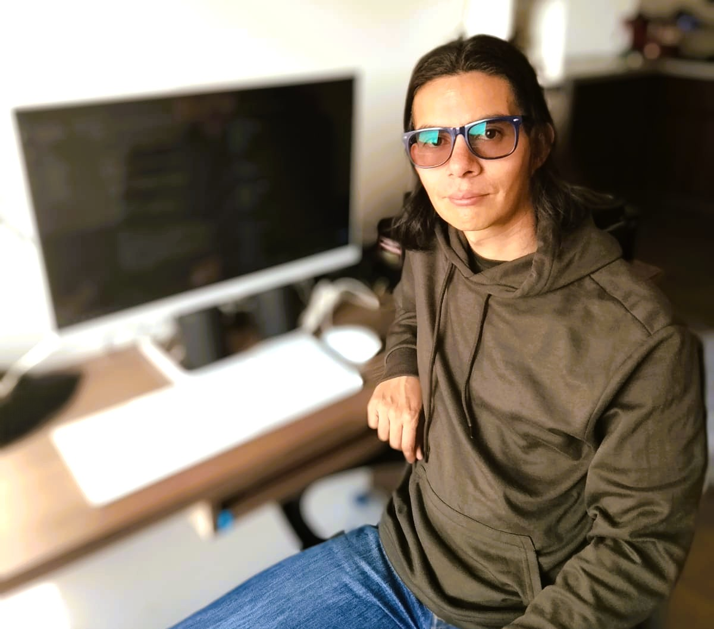
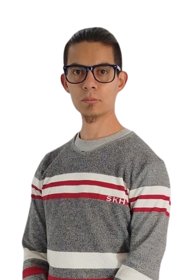
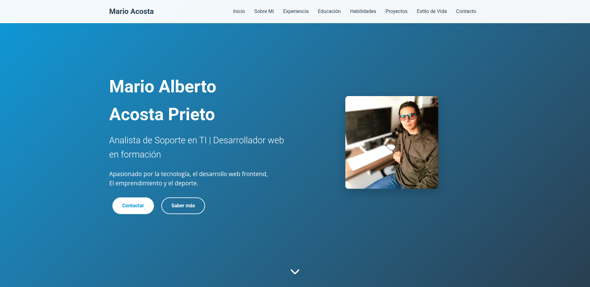
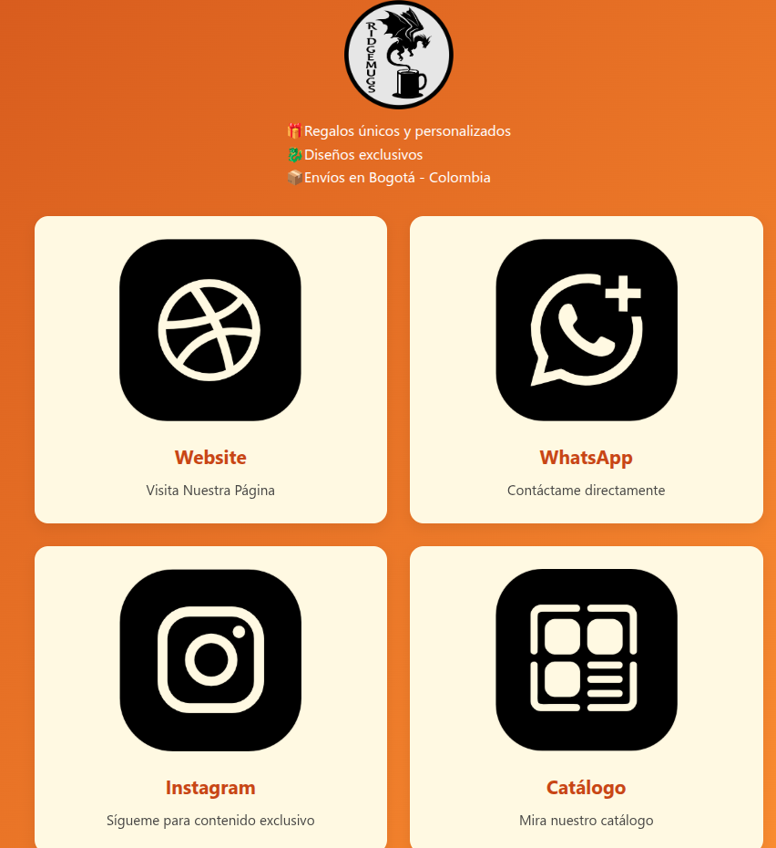
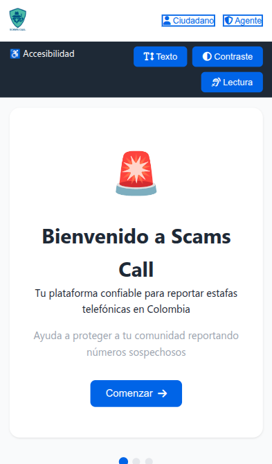
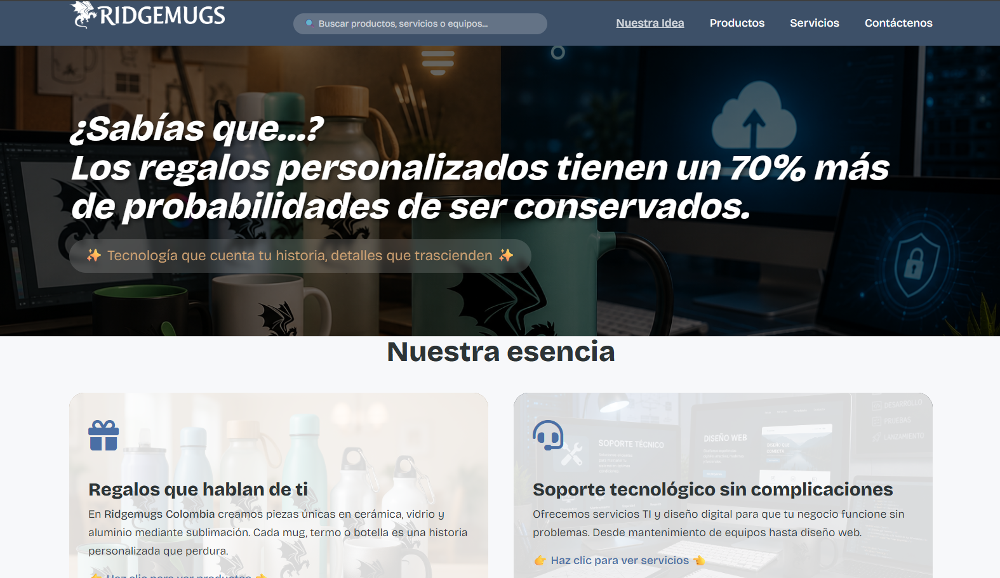

Apasionado por la tecnología, el desarrollo web frontend,
El emprendimiento y el deporte.


Analista de Soporte TI con experiencia en atención técnica presencial y remota, especializado en diagnosticar y solucionar problemas de hardware, software y redes. Mi pasión por la tecnología me ha llevado a formarme como Desarrollador Web Frontend, dominando las bases de HTML, CSS y JavaScript. Para acelerar mi aprendizaje y mejorar mi eficiencia, aplico de forma estratégica herramientas de Inteligencia Artificial, utilizando instrucciones precisas y estructuradas que me permiten investigar soluciones, generar ideas para código y optimizar tareas repetitivas.
Busco realizar la transición a un rol como Desarrollador Frontend Junior, donde pueda aportar mi sólida capacidad de análisis y resolución de problemas. Mi objetivo es contribuir en proyectos de desarrollo, complementando este trabajo con mi experiencia en soporte técnico cuando sea necesario, para ofrecer un valor integral al equipo.
Además de mis habilidades técnicas, valoro la comunicación inclusiva y he desarrollado conocimientos básicos en Lengua de Señas Colombiana (LSC), reflejando mi compromiso con la accesibilidad y diversidad en entornos profesionales.
Soporte On Site a entidades financieras, resolviendo problemas de hardware y software, Colaboración con el equipo de IBM para el mantenimiento de infraestructuras tecnológicas.
Administración y gestión de redes de telecomunicaciones móviles con asistencia 24/7 en el NOC de Claro.
Monitoreo, mantenimiento e instalación de software o herramientas en equipos y servidores, con asistencia 24/7 en el Data Center.

Portafolio personal responsivo desarrollado con HTML, CSS y JavaScript. Implementa diseño moderno, menú hamburguesa y despliegue automáticos.

Página de enlaces para emprendimiento de productos personalizados. Desarrollada para centralizar redes sociales y canales de contacto de Ridgemugs Colombia.

Aplicación desarrollada para Hackabox de la Fundación Sandbox. Enfocada en identificar y prevenir llamadas fraudulentas mediante tecnologías web.

Desarrolo pagina web Ridgemugs Colombia Web Oficial adjuntado bases de datos desde aplicaciones de Google mediante cuenta gratuita, aplicando responsivo desarrollado con HTML, CSS y JavaScript. Implementa diseño moderno, menú hamburguesa y despliegue automático.
Disfruto leyendo artículos sobre videojuegos, automóviles, motos, tecnología y deportes. En el ámbito literario, me apasiona la fantasía.
Escucho principalmente rock, especialmente heavy metal, thrash metal y metal sinfónico. También disfruto del blues y jazz ocasionalmente.
Me encanta andar en bicicleta por la ciudad y practico atletismo de forma recreativa para mantenerme activo.
Actualmente lidero un emprendimiento de comercialización y diseño de productos personalizados como mugs, termos y botellas, adaptándolos al gusto del cliente.